Midpoint

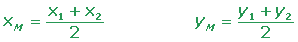
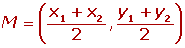
Examples
Calculate the coordinates of the midpoint from the line segment AB.
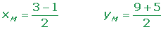
Calculate the coordinates of Point C in the line segment AC, knowing that the midpoint is B = (2, −2) and an endpoint is A = (−3, 1).
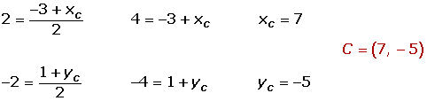
If M1 = (2, 1), M2 = (3, 3) and M3 = (6, 2) are the midpoints of the sides that make up a triangle, what are the coordinates of the vertices?
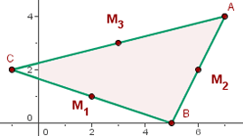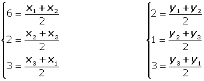
x1 = 7 x5 = 7 x3 = −1
y1 = 4 y5 = 0 y3 = 3
A(7, 4)B(5, 0) C(−1, 2)
If the line segment AB with endpoints A = (1,3) and B = (7, 5) is divided into four equal parts, what are the coordinates of the points of division?
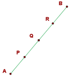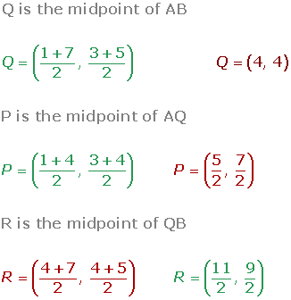
Symmetric Point
If A' is the symmetric of A with respect to M, then M is the midpoint of the line segment AA'.

Calculate the symmetric point of A = (7, 4) with the midpoint M = (3, −11).
Examples

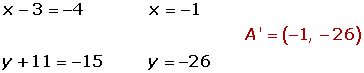
Calculate the symmetric point of A = (4, −2) for midpoint M = (2, 6).

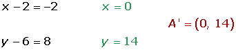
Three Collinear Points
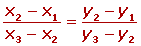
Examples
Determine whether A = (−2, −3), B = (1, 0) and C = (6, 5) are alligned points.

Calculate the value of a in the following aligned points.
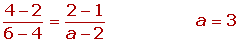
Centroid Coordinates
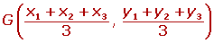
Examples
Given the vertices of a triangle A = (−3, −2), B = (7, 1) and C = (2, 7), calculate the coordinates of the centroid.

If two vertices of a triangle are A = (2, 1) and B = (1, 0) and the centroid is G = (2/3, 0), calculate the third vertex.
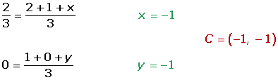
Dividing a Segment
Dividing the segment AB at a given ratio r is to determine a point P on the line containing the segment AB, so that both sides PA and PB have a ratio of:
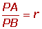
Examples
Calculate the points P and Q that divide the line segment with endpoints A = (-1, -3) and B = (5, 6) into three equal parts?
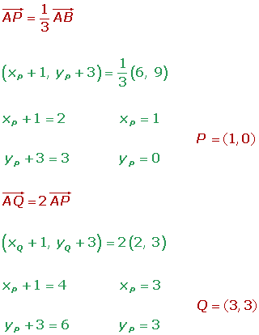
The coordinates of the endpoints from the line segment AB are: A = (2, −1) and B = (8, −4). Find the coordinates of point C such that it divides the line segment into two equal parts.
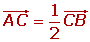
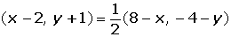
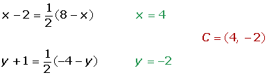
Given the points A (3, 2) and B (5, 4), find a point C such that it is aligned with A and B and a ratio of 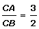 is obtained.
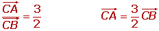
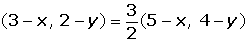
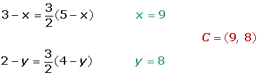